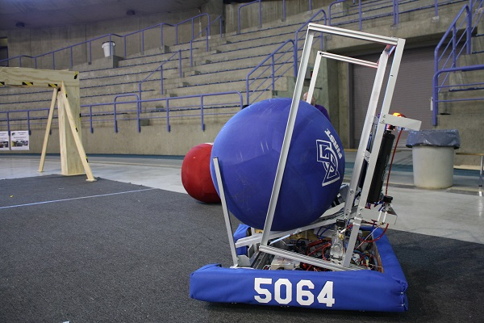

layout: false
class: center, middle, inverse
# Topic 7: Fluid Pressure
---
name: base
layout: true
background-image: url(http://drpineda.ca/classroom/notes/slidebackground.png)
---
# This is the second slide
- Liquid and gaseous fluids in a closed system exert pressure.
- Pressure: a measure of the force with which a fluid pushes on the walls of the container that contains it.
- Pressure is calculated by dividing the force by the area upon which the force is exerted.
$$P = \frac{\mbox{Force}}{\{\mbox{Area}}} = \frac{F}{A}$$
---
# Pressure
Pressure depends on
- the size of the force
- the total area being applied
Pressure is simply the force experienced by an object divided by the area of the surface on which the force acts. The force is acting perpendicular to the surface.
The unit for pressure is the Pascal, Pa
---
# Pressure & the Pascal
Pressure can be calculated by using the following formula:
$$P = \frac{\mbox{Force}}{\{\mbox{Area}}} = \frac{F}{A}$$
Force is measured in newtons (N)
Area is often measured in square metres ( `\( \mbox{m}^2 \)` )
Pressure is newtons per metre square ( `\( \mbox{N} / \mbox{m}^2 \)` ) - also called a Pascal (Pa), after Blaise Pascal (a French scientist in honour of his pioneering work in pressure)
1000 pascals is called a kilopascal (kPa)
---
# Measuring air pressure
The most common device for measuring air pressure is the barometer. In a mercury barometer, increased air pressure forces the column of mercury up the glass tube and allows it to fall when the air pressure decreases.
---
# Blaise Pascal (1623-1662)
- French scientist
- Demonstrated a talent for numbers and relationships at a very early age.
- By the time he was 16, he had published a geometry book, and by 19, had invented the first mechanical calculator.
- Known for his work on pressure and volume, and them laws that govern them.

---
# The life of Blaise Pascal
www.youtube.com/embed/PchmyoYd58E
Complete the questions on the next page as you watch the video
---
# Think about it: The Life of Blaise Pascal
Draw a barometer and explain how it works. Include the following labels: vacum, column of mercury, 760mm Hg for standard atmosphere, atmospheric pressure.
---
# Atmospheric Pressure
- Earth’s atmosphere is about 160 km thick and is held to the Earth by the force of gravity
- The force exerted by the weight of the air is called air pressure and changes with altitude
- The higher the altitude, the lower the pressure (because fewer particles are present, fewer particles exerting pressure, the air is thinner)
- The pressure inside your body does not change as quickly, with changes in altitude, so the number of particles pressing from the inside out is still the same at the top of a mountain and at the base. Forc example, if the difference in pressure on either side of the eardrum becomes great you experience a pop inside your ear (this is the pressure equalizing)
---
# Compression
##Compressibility
The ability to decrease the volume when pressure is applied.
##Confined Fluid...
are completely enclosed in a container (can of pop, diver’s oxygen tank).

---
# Video: Compressed air powering rad bot
www.youtube.com/embed/n-blIXP4AnM?rel=0
---
# Compression of gas
Compression of a gas is made possible because of these conditions:
1. the gas must be in an enclosed, sturdy, sealed container
1. the space between the particles still exists, enabling the substance to continue to be a gas
1. an external (outside) force is applied to push the particles closer together gases are compressible because their particles can be squeezed closer together into a smaller volume
---
# Some advantages of compression
Gases can exert a force back (a counterforce) when they are compressed. Useful in...
- cushioning shocks
- automobile shocks
- airbags
- running shoes
Think of three more examples of how gas compression is used:
1.
1.
1.
---
# Video: A freedivers lungs
www.youtube.com/embed/X7roaf8kckM
Complete the questions on the next page as you watch the video
---
# Think about it: A freediver's lungs
1. What is the volume of the air in at the surface?
1. What is the volume of the air at the deepest point? How deep is the dive?
1. Explain what happens to the air in the container during the dive. Explain why?
1. The average lung capacity in adult men is 4.6 liters and in women 3.1 liters. If a diver takes a deep breath at the surface and the free doves to the same depth as in the video, what volume will the air in his or her lungs have at the maximum depth? If you are a boy calculate the volume for men and if you are a girl calculate volume for women. Hint: you can use cross ratios to figure out the answer.
1. What would happen to a scuba divers lungs (a scuba diver is a diver carrying airtanks) if he would dive down to maximum depth, take as deep of a breath as he can and then ascend back to the surface while holding his breath?
---
# Balanced and unbalanced forces
- If the inside of a closed container experiences a lower air pressure than the air pressure pushing on the outside, the walls of the container will buckle (cave in) because there is an unbalanced force (the force of the atmosphere is greater than the force within the container)
Give three examples:
1.
1.
1.
- If the inside of a closed container experiences a higher air pressure than the air pressuring on the outside, the walls of the container will expand (expand) because there is an unbalanced force (the force of the atmosphere on less than the force within the container)
Give three examples:
1.
1.
1.
---
# Think about it: The fluid pressure paradox

If the height of the fluid's surface above the bottom of the five vessels is the same, in which vessel is the pressure of the fluid on the bottom of the vessel the greatest? The amount of liquid in each vessel is not necessarily the same.
---
# Vocab
-
-